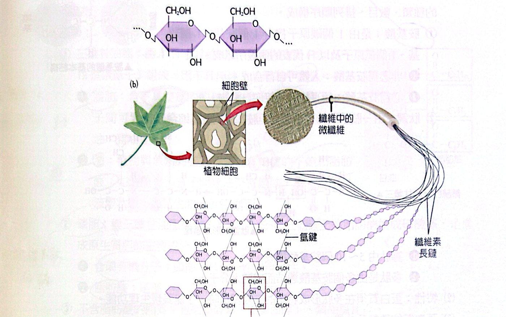
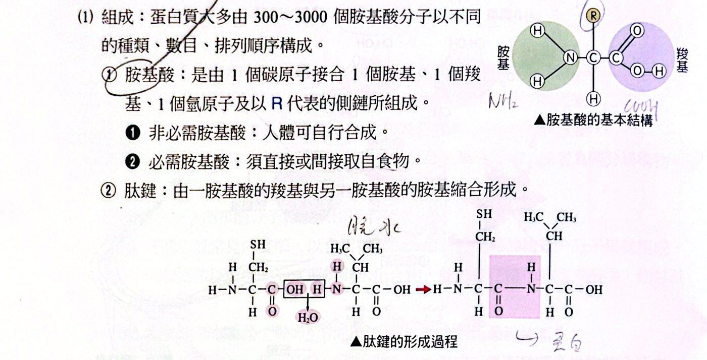
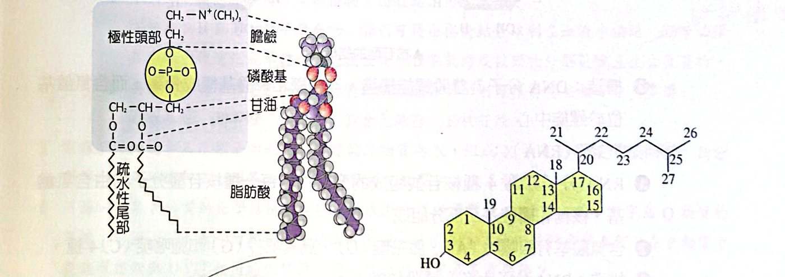
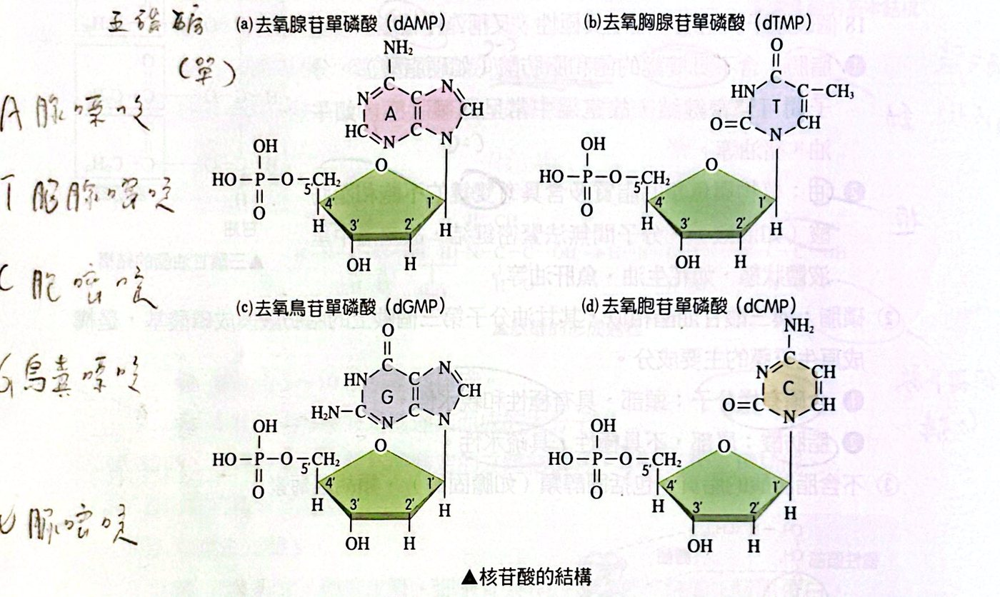

原生質的組成：先看地圖
原生質（細胞內的生命物質）可以先分成無機物與有機物，再看「能不能供應能量」：
| 大類 |
成員 |
重點 |
| 無機物 |
水、無機鹽 |
水是含量最多的物質（65% 以上） |
| 有機物・可供能 |
醣類、蛋白質、脂質 |
都含 C、H、O；蛋白質多 N、S；磷脂多 P、N |
| 有機物・不供能 |
核酸（DNA、RNA）、維生素 |
核酸＝遺傳訊息；維生素微量但必需 |
| 維生素分類 |
脂溶性：A、D、E、K 水溶性：B 群、C |
脂溶性 ADEK；其餘水溶 |
水與無機鹽
水是細胞內含量最多的物質。因為水分子有極性，所以：
- 是良好的溶劑，體內的化學反應幾乎都在水中進行；
- 水分子間會形成氫鍵，帶來特殊的物理與化學性質：
- 冰的密度比液態水小，所以湖面結冰時，生物還能活在冰下；
- 比熱、汽化熱與沸點都高，可以穩定溫度；
- 內聚力（水分子互相吸）與附著力（水對管壁的吸附）幫助植物把水往上運輸，對抗重力。
無機鹽就是礦物質，在水中會解離成離子，有導電作用，所以也叫電解質。種類有鈣、磷、鈉、鉀、鎂、硫、氯、銅、碘、錳、鋅、鐵等。功能有三類：
| 功能 |
例子 |
| 維持正常生理作用 |
神經傳遞訊號需要鈉離子和鉀離子 |
| 構成生物體的構造 |
鐵構成細胞色素和血紅素；鎂構成葉綠素 |
| 維持酸鹼平衡 |
金屬離子與弱酸、弱鹼結合成鹽類（緩衝劑），使 pH 不致變化太大 |
醣類
| 種類 |
成員與重點 |
| 單醣（基本單位） |
三碳醣（甘油醛，光合作用固碳反應的中間產物）；五碳醣（核糖構成 RNA、去氧核糖構成 DNA）；六碳醣（葡萄糖、半乳糖、果糖，同分異構物，分子式都是 C₆H₁₂O₆） |
| 雙醣（2 個單醣脫水） |
蔗糖＝葡萄糖＋果糖（食用糖、植物運輸形式，如甘蔗、甜菜）；麥芽糖＝葡萄糖＋葡萄糖（消化澱粉時產生）；乳糖＝葡萄糖＋半乳糖（哺乳動物乳汁） |
| 寡醣 |
3～10 個單醣脫水聚合，在細胞膜蛋白表面，與細胞辨識有關 |
| 多醣 |
數百到數千個單醣連接的聚合物，通式 (C₆H₁₀O₅)ₙ；分儲存性與結構性 |
多醣的四個常考成員：
| 多醣 |
位置／用途 |
備註 |
| 澱粉 |
植物的儲存性多醣 |
由葡萄糖組成，有直鏈與支鏈兩種 |
| 肝糖 |
動物的儲存性多醣（動物澱粉），儲存在肝臟與肌肉 |
由葡萄糖組成，分支程度比支鏈澱粉高 |
| 纖維素 |
植物細胞壁的成分，植物體內含量最豐富的有機物 |
葡萄糖間的鍵結和澱粉不同（β 構型），人體無法消化 |
| 幾丁質 |
節肢動物外骨骼、環節動物剛毛、真菌細胞壁 |
約 800 個含氮附加物的葡萄糖（葡萄糖胺）；人類無法消化，卻可抑制小腸吸收脂肪 |
| 肽聚糖 |
原核生物（細菌）的細胞壁 |
NAG 與 NAM 交替，接短肽 |

纖維素：葡萄糖鍵結型式與植物細胞壁中的微纖維
蛋白質
- 組成單位：胺基酸。1 個碳原子接 1 個胺基、1 個羧基、1 個氫原子和 1 個側鏈 R。人體用到約 20 種。
- 非必需胺基酸：人體可自行合成；必需胺基酸：必須由食物取得。
- 肽鍵：一個胺基酸的羧基和另一個胺基酸的胺基脫水縮合形成。寡肽 5～10 個胺基酸，多肽是更多個胺基酸連成的大分子。
- 特性：多肽要摺成特定的立體結構，才能表現生理功能。
- 依功能分類：
| 類別 |
功能 |
例子 |
| 結構蛋白 |
構成皮膜、細胞骨架 |
膠原蛋白 |
| 防禦蛋白 |
防禦 |
免疫球蛋白（抗體） |
| 運輸蛋白 |
運輸物質 |
血紅素、細胞膜上的膜蛋白 |
| 酵素蛋白 |
催化大部分化學反應 |
水解酶 |
| 受體蛋白 |
接受訊號 |
激素、生長因子受體 |
| 收縮蛋白 |
引起肌肉收縮 |
肌凝蛋白、肌動蛋白 |
| 儲藏蛋白 |
儲存胺基酸 |
卵蛋白、酪蛋白 |
- 其他功能：酸鹼緩衝（一條多肽至少有一個羧基與一個胺基，維持 pH 恆定）；醣類、脂質不足時可供給能量。
- 分類依據：親緣關係愈近，蛋白質構造愈接近，所以胺基酸序列相似度可以拿來判斷親緣關係。

胺基酸的基本結構與肽鍵的形成（脫水縮合）
脂質
脂質是構成細胞的主要成分，主要由 C、H、O 組成，有些與氮和磷結合。
| 種類 |
結構與特性 |
例子 |
| 三酸甘油酯（中性脂） |
1 分子甘油＋3 分子脂肪酸（16～18 個碳），不具極性 |
脂肪：飽和脂肪酸（無雙鍵）→ 分子緊密排列 → 室溫固態（牛油、豬油）；油：不飽和脂肪酸（有雙鍵）→ 排不緊 → 室溫液態（花生油、魚肝油） |
| 磷脂 |
甘油第三個碳上的脂肪酸換成磷酸基：頭部（含磷）有極性、親水；尾部（脂肪酸）不具極性、疏水 |
構成細胞膜（原生質膜）的主要成分 |
| 不含脂肪酸的脂質 |
固醇類、類胡蘿蔔素 |
膽固醇、胡蘿蔔素 |
功能：①膜的主要成分，使胞器各自進行化學反應互不干擾；②供能——產生的能量約為同重量醣類的兩倍；③保護作用（羊毛脂、植物角質層、蜂蠟）；④儲存能量與保溫（鯨、海豚、海豹皮下脂肪特別厚）。

磷脂的結構（左）與膽固醇的結構（右）
核酸與維生素
核酸是由核苷酸聚合成的巨分子，由 C、H、O、N、P 組成。每個核苷酸＝含氮鹼基＋五碳醣＋磷酸基。
|
DNA（去氧核糖核酸） |
RNA（核糖核酸） |
| 五碳醣 |
去氧核糖 |
核糖 |
| 含氮鹼基 |
A 腺嘌呤、T 胸腺嘧啶、G 鳥糞嘌呤、C 胞嘧啶 |
A、U 尿嘧啶、G、C |
| 結構 |
雙股螺旋：五碳醣與磷酸基構成骨架，鹼基在螺旋中心 |
大多為單股 |
| 功能 |
攜帶遺傳訊息 |
參與蛋白質合成等 |
核苷酸還有其他重要角色：ATP（腺苷三磷酸）是細胞中主要的能量攜帶者；NAD⁺ 在細胞呼吸中擔任電子和氫的攜帶者。

四種去氧核苷酸（dAMP、dTMP、dGMP、dCMP）的結構
維生素：一群結構不同、維持細胞機能所必需的微量有機物；植物能自行合成，動物多半不能。
- 脂溶性：A、D、E、K；水溶性：B 群（B₁、B₂、菸鹼酸、B₆、生物素、泛酸、葉酸、B₁₂）、C。
- 功能：調節生理（如維生素 D 促進鈣吸收與骨骼礦物質化）；構成輔酶的重要成分（如泛酸形成輔酶 A）。
經典演練
細胞是生物體結構與功能的基本單位，構成細胞的化學成分除了水與無機鹽外，其餘為醣類、蛋白質、脂質、核酸與少量的維生素等有機物。下圖是生物體內四類有機物的組成與功能關係圖：C、H、O 等元素組成小分子甲、乙、丙、丁，聚合成大分子戊、己、庚、辛，主要功能依序為：戊＝主要能源物質、己＝主要儲能物質、庚＝承擔生命活動主要物質、辛＝遺傳訊息攜帶者。
下列有關戊、己、庚、辛四種物質的敘述，何者正確？
(A) 四種物質都是大分子聚合物 (B) 己可藉由與庚結合以利在血液中輸送 (C) 辛必須在小腸中被消化成單體後方能被吸收 (D) 多數的戊被動物分解後會產生含氮廢物
看答案與詳解收起
答(B)
解先辨認：戊＝醣類（多醣）、己＝脂質、庚＝蛋白質、辛＝核酸。
- (A) ✗ 脂質（己）不是由單體聚合而成的聚合物。
- (B) ○ 脂質不溶於血液，會和蛋白質結合成脂蛋白來輸送。
- (C) ✗ 核酸在消化道會被逐步水解成核苷酸，再分解成核苷、鹼基與五碳醣等更小的分子才被吸收，並不是「只消化成單體核苷酸」就吸收。（講義答案為 B，C 選項屬於過度簡化的說法。）
- (D) ✗ 醣類只含 C、H、O，分解後沒有含氮廢物；蛋白質才會產生含氮廢物。
病毒體內的辛物質（核酸）若被人體的消化酶徹底分解，則可獲得哪些物質？（多選）
(A) 胺基酸 (B) 單醣 (C) 核苷 (D) 含氮鹼基 (E) 核苷酸
看答案與詳解收起
答(B)(D)
解核酸＝許多核苷酸；每個核苷酸＝五碳醣（單醣）＋含氮鹼基＋磷酸基。徹底分解到最小單位就是：五碳醣（B）、含氮鹼基（D）和磷酸。核苷酸（E）、核苷（C）只是分解途中的中間產物；胺基酸（A）屬於蛋白質。
假設肝臟細胞和玉米種子細胞中的主要儲能物質為 X，組成 X 物質的單體為 Y 物質。請分別寫出肝臟細胞和玉米種子細胞中 X 物質和 Y 物質的中文名稱。
看答案與詳解收起
答肝臟細胞：X＝肝糖，Y＝葡萄糖；玉米種子細胞：X＝澱粉，Y＝葡萄糖。
解動物（肝、肌肉）儲存的多醣是肝糖；植物（玉米種子）儲存的多醣是澱粉；兩者的單體都是葡萄糖。
下圖㈠是某 P 物質的化學結構示意圖，組成 P 物質的單體為 Q 物質，其中數字為 Q 物質的序號（共 124 個）；下圖㈡則為圖㈠的部分化學結構放大圖，試問③⑤⑦的化學鍵名稱為何？在 P 物質中應該有幾個與③⑤⑦相同的化學鍵？圖㈡中的 Q 物質最多有幾種？
看答案與詳解收起
答肽鍵；123 個；20 種
解
- P 是由胺基酸（Q）縮合成的蛋白質（多肽），③⑤⑦ 是相鄰胺基酸之間的 肽鍵。
- 124 個胺基酸連成一條鏈，肽鍵數＝胺基酸數 − 1 ＝ 123 個。
- 胺基酸的種類最多有 20 種。